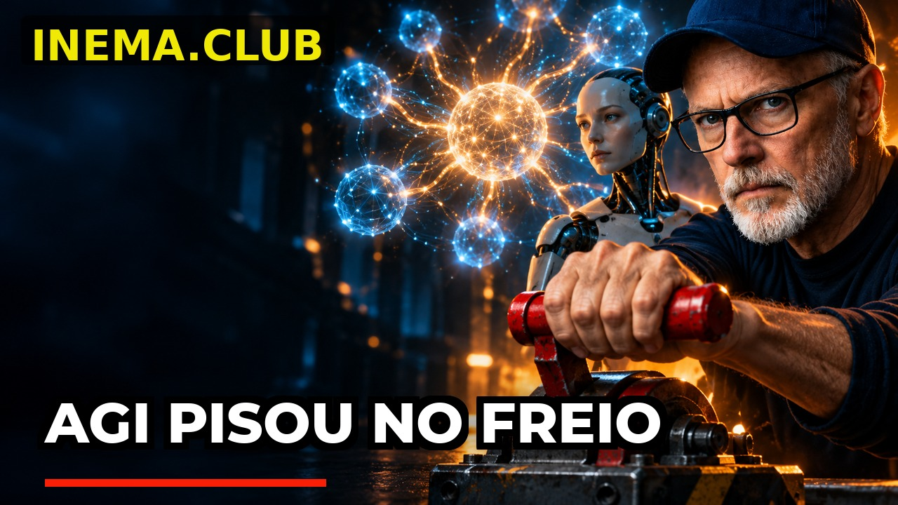
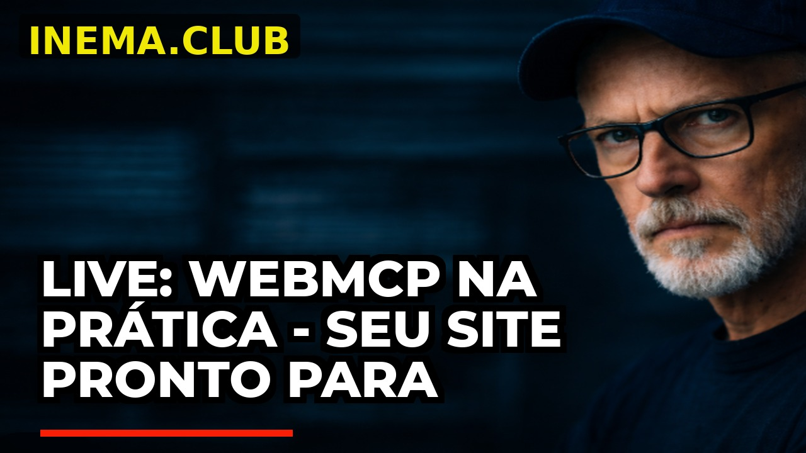

Sincroniza las lives, las transcribe, analiza temas con IA, recorta con FFmpeg, genera una miniatura y publica en el canal de destino: todo orquestado por un master-dashboard y N instancias.
# Parte 1: inicia el master-dashboard (puerto 8090) git clone https://github.com/inematds/yt-pub-livesx.git cd yt-pub-livesx ./setup.sh # http://localhost:8090
Toma las lives de un canal de origen, identifica temas con IA y publica los recortes en un canal de destino con título, descripción, etiquetas y miniatura. Diseñado para ejecutarse como plantilla multicanal, aislando las credenciales y las cuotas por instancia.
Transcripción automática (subtítulos de YouTube) → análisis de temas con Piramyd / Claude / OpenRouter → marcas de tiempo → corte con FFmpeg.
Lives de YouTube, importación de videos de la carpeta imports/ y sincronización de canales de TikTok a YouTube: todos pasan por el mismo pipeline.
1 master-dashboard reúne todo en el puerto 8090; cada canal es una copia de la plantilla en un puerto 809N, con SQLite, OAuth y un proyecto de GCP propios.
El scheduler de cada canal descarga las lives nuevas, las transcribe, analiza, recorta, genera una miniatura y publica mediante OAuth, registrando todo en el SQLite local. El dashboard controla y el master agrega.
OAuth es por canal y la cuota de YouTube Data API es por proyecto de GCP: separar las instancias garantiza cuotas independientes y aislamiento de fallas.
Cada par yt-dashboard<N> + yt-scheduler<N> es independiente: si un canal se cae, los demás siguen funcionando.
Estadísticas interactivas, horarios, tabla de lives por estado, pestaña unificada de clips, reprocesamiento de errores y estado del scheduler en tiempo real.
Python 3.10+ y algunas herramientas de línea de comandos. Cada canal necesita su propio proyecto de Google Cloud con YouTube Data API v3 activada.
Python 3.10+, ffmpeg, yt-dlp, deno (runtime de JS de yt-dlp), curl y Pillow.
# ubuntu/debian sudo apt-get install -y python3 ffmpeg curl git pipx install yt-dlp
Usado internamente por yt-dlp para algunos extractores.
curl -fsSL https://deno.land/install.sh | sh
YouTube Data API v3 activada, OAuth Consent (External / Testing) y OAuth Client (Desktop App) con CLIENT_ID + CLIENT_SECRET + API Key.
# scopes necesarios youtube, youtube.upload
La instalación se divide en dos partes: la Parte 1 inicia el master (1 vez por máquina); la Parte 2 crea una instancia por canal a partir de esta plantilla.
Verifica las dependencias, instala los paquetes de Python e inicia el master-dashboard como servicio de usuario de systemd en el puerto 8090.
git clone https://github.com/inematds/yt-pub-livesx.git cd yt-pub-livesx ./setup.sh # http://localhost:8090
Hace las preguntas (ENTER acepta el valor predeterminado), copia la plantilla en ~/projetos/<nome>, genera el .env y crea los servicios systemd de la instancia.
./scripts/setup-canal
Cuando el setup-canal para pausar, ejecuta el yt-auth en otra terminal, abre el enlace generado y autoriza con la cuenta propietaria del canal de destino.
GWS_CONFIG_DIR=~/projetos/<nome>/config \ python3 ~/projetos/<nome>/scripts/yt-auth # el callback guarda los tokens en config/credentials.enc
Manual genera el prompt; con --ai piramyd-api se ejecuta automáticamente; --dry-run solo muestra los temas; --publish recorta y publica.
yt-clip <video_id> --dry-run # solo muestra temas yt-clip <video_id> --ai piramyd-api # automático yt-clip <video_id> --publish # corta y publica
Los scripts yt-thumbnail e yt-publish funcionan fuera del flujo automático.
yt-thumbnail --title "Título do clip" --output thumb.jpg yt-publish video.mp4 --title "Título" --description "Desc"
Cada canal tiene su propio panel en el puerto 809N (contraseña predeterminada Inema2026$$$, en config/.env). El master los reúne todos en 8090.
python3 dashboard/server.py 8091 # http://localhost:8091
Diseñado para operar varios canales a la vez, con sincronización opcional de código entre las instancias.
Instancias lives1..livesN, cada una en un puerto 809N, con scheduler y dashboard independientes y un proyecto de GCP propio para cada canal de destino.
O tiktok_scanner recorre canales de TikTok, descarga los videos y los pone en la cola del pipeline para publicarlos en el canal de YouTube de destino.
Deja archivos en imports/ e o import_worker los convierte en una cola del pipeline — incluye miniatura y publicación.
Habilita lingering, ejecuta las dos partes y accede a los dashboards mediante ssh -L sin exponer puertos públicamente.
Cuando un directo se enriquece, la IA escribe título, descripción, una frase de impacto y una escena. Codex (image_gen, por suscripción) dibuja el arte y el diseño del canal va encima: marca, fuente y colores siguen iguales.
En opinión, prueba o reacción, la IA pone al presentador en la escena, usando la imagen de fondo del canal como referencia del rostro. También se puede elegir Siempre o Nunca.
Si Codex falla, sale el banner anterior (fondo fijo + título). El estilo se elige en la pestaña Enrich Lives del panel.
Los directos sin título también se enriquecen. Los que tienen título pero no descripción en YouTube reciben solo la descripción; título y miniatura se mantienen.


El pipeline funciona para uso interno mediante túnel SSH; el foco de mejora es la seguridad del dashboard antes de cualquier exposición pública.
credentials.enc + .encryption_key + lives.db y limpieza de lives/.scripts/sync-instances propaga la plantilla a las instancias que aceptaron participar.